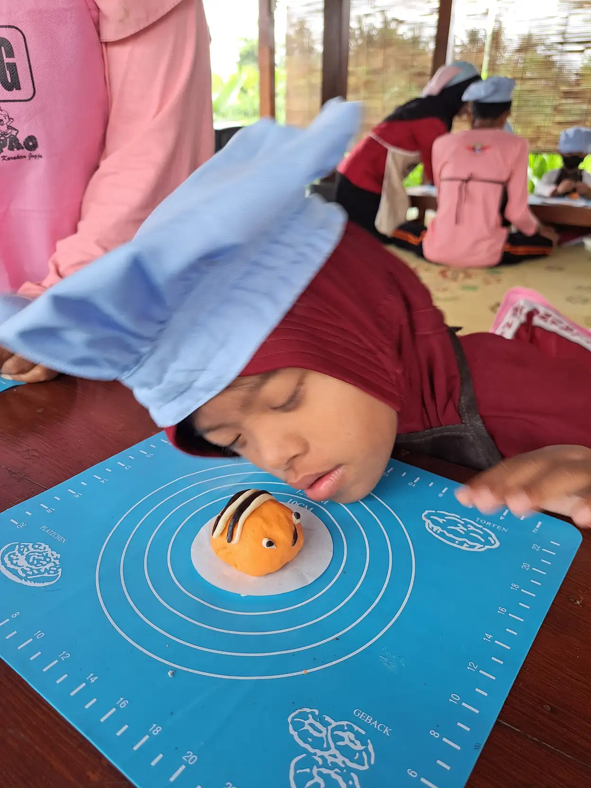

Terapi musik untuk anak berkebutuhan khusus adalah intervensi terarah yang menggunakan musik untuk mendukung tujuan fisik, komunikasi, emosi, kognitif, atau sosial. Terapi ini berbeda dari aktivitas mendengarkan lagu di rumah. Dalam terapi, tenaga yang kompeten melakukan asesmen, memilih teknik, mengamati respons anak, dan meninjau kemajuan berdasarkan tujuan individual.
Musik dapat membantu anak masuk ke dalam aktivitas karena memiliki pola, pengulangan, dan unsur menyenangkan. Namun, respons anak terhadap suara sangat beragam. Ada anak yang menikmati ritme, sementara anak lain sensitif terhadap volume atau nada tertentu. Karena itu, musik tidak boleh dipaksakan.
Artikel ini membahas kemungkinan manfaat, contoh kegiatan, cara bekerja sama dengan terapis, dan batasan yang perlu diketahui. Informasi ini bukan pengganti konsultasi. Tujuan terapi perlu ditetapkan bersama tenaga profesional yang memahami kondisi dan komunikasi anak.
Daftar Isi
Apa Itu Terapi Musik?
American Music Therapy Association menjelaskan terapi musik sebagai profesi kesehatan yang menggunakan musik dalam hubungan terapeutik untuk menangani kebutuhan fisik, emosional, kognitif, dan sosial. Terapis dapat menggunakan kegiatan mencipta, bernyanyi, bergerak, memainkan alat sederhana, atau mendengarkan musik setelah menilai kebutuhan klien.
Definisi tersebut menegaskan dua hal. Pertama, musik dipakai untuk tujuan yang dapat dijelaskan, bukan sekadar hiburan. Kedua, hubungan terapeutik dan kompetensi terapis penting. Lagu yang disukai keluarga belum otomatis menjadi terapi, sama seperti bermain bola di rumah belum tentu sama dengan fisioterapi.
Terapi musik dapat berjalan sendiri atau menjadi bagian dari tim yang melibatkan orang tua, guru, psikolog, dokter, dan terapis lain. Pada anak ABK, koordinasi membantu agar target di ruang terapi bisa diperkuat dalam rutinitas rumah dan sekolah.
Manfaat yang Mungkin Didukung
Tujuan terapi ditentukan dari kebutuhan anak. Beberapa anak membutuhkan dukungan untuk berkomunikasi, mengikuti instruksi, menunggu giliran, mengatur emosi, atau melakukan gerakan. Anak lain mungkin membutuhkan aktivitas yang meningkatkan motivasi dan rasa percaya diri.
- Komunikasi: lagu berulang dapat menjadi konteks untuk meminta, memilih, meniru suara, menggunakan gestur, atau memakai alat komunikasi alternatif.
- Interaksi sosial: aktivitas bergiliran dengan instrumen sederhana dapat melatih perhatian bersama, menunggu, dan merespons orang lain.
- Gerak dan koordinasi: ritme dapat dipakai sebagai petunjuk untuk berjalan, menepuk, meraih, atau melakukan gerak fungsional sesuai asesmen.
- Regulasi emosi: pola yang dapat diprediksi dan pilihan musik yang aman dapat membantu anak mengenali waktu mulai, jeda, dan selesai.
- Partisipasi: kegiatan musik yang berhasil dapat meningkatkan kemauan anak mengikuti aktivitas kelompok atau pembelajaran.
Manfaat tersebut bukan janji otomatis. Ukurannya harus konkret, misalnya anak mampu menunggu lima detik sebelum mendapat giliran, memilih satu dari dua lagu, atau mengikuti tiga langkah gerak dengan bantuan lebih sedikit. Catatan seperti ini lebih berguna daripada klaim “musik meningkatkan kecerdasan” yang terlalu luas.

Contoh Aktivitas dalam Sesi
Bernyanyi dengan jeda
Terapis menyanyikan lagu yang sudah dikenal lalu memberi jeda pada bagian tertentu. Anak dapat mengisi suara, gestur, gambar, atau tombol komunikasi. Targetnya bukan kemampuan menyanyi, melainkan kesempatan anak memulai atau merespons komunikasi.
Ritme dan giliran
Anak dan terapis bergantian mengetuk drum kecil, shaker, atau benda aman yang menghasilkan suara lembut. Aktivitas dapat dimulai dengan pola sederhana. Terapis mengatur tempo dan mengamati apakah anak mampu menunggu, meniru, atau memberi tanda ingin melanjutkan.
Gerak mengikuti musik
Lagu dengan tempo konsisten dapat menjadi isyarat untuk berjalan, mengangkat tangan, berhenti, atau berpindah. Gerakan harus sesuai kemampuan fisik dan tidak menimbulkan nyeri. Bila anak menggunakan alat bantu, keselamatan dan posisi tubuh menjadi prioritas.
Pilihan lagu dan ekspresi
Anak dapat memilih lagu cepat atau lambat, suara keras atau lembut, serta ingin duduk atau bergerak. Pilihan membantu anak mengungkapkan preferensi dan merasakan kendali. Terapis juga dapat mengenalkan kata atau simbol seperti senang, takut, selesai, dan lagi.
Bagaimana Sesi Berlangsung?
Sesi biasanya dimulai dengan menyapa anak dan mengamati kondisi hari itu. Terapis menyesuaikan rencana bila anak kurang tidur, sakit, cemas, atau mengalami perubahan rutinitas. Setelah itu, aktivitas dipilih berdasarkan tujuan yang telah disepakati, lalu respons anak dicatat.
Orang tua sebaiknya meminta penjelasan singkat setelah sesi. Tanyakan target apa yang dilatih, sinyal anak ketika nyaman atau kewalahan, kegiatan yang aman untuk diperkuat di rumah, dan indikator kemajuan. Terapi yang baik tidak membuat orang tua merasa harus menebak hasil sesi.
Untuk sebagian anak, kemajuan terlihat dari kemampuan bertahan dalam aktivitas, bukan dari perubahan besar dalam waktu singkat. Frekuensi evaluasi dapat disepakati sesuai kondisi. Bila suatu teknik membuat anak terus tertekan, rencana perlu ditinjau, bukan dipaksakan.
Latihan Aman di Rumah
Keluarga dapat membuat rutinitas musik singkat, misalnya lima sampai sepuluh menit setelah anak siap. Mulailah dengan lagu yang dikenal, volume rendah, dan pilihan yang dapat diprediksi. Berikan anak kesempatan mengatakan “lagi”, “berhenti”, atau “ganti” melalui cara komunikasinya.
- Gunakan alat yang tidak memiliki bagian kecil mudah tertelan dan tidak menghasilkan suara berlebihan.
- Jaga volume agar tidak mengganggu pendengaran atau memicu distress sensorik.
- Jangan menahan tubuh anak agar mengikuti gerakan tertentu.
- Berhenti ketika anak menutup telinga, menjauh, menangis, menjadi sangat tegang, atau menunjukkan tanda tidak nyaman.
- Catat aktivitas yang membantu, lalu bagikan kepada terapis dan guru.
Aktivitas musik dapat dipadukan dengan terapi bermain, sensori integrasi, atau latihan motorik halus bila sesuai tujuan. Pastikan keluarga tidak menjadikan setiap waktu bermain sebagai sesi evaluasi.
Cara Memilih Layanan
Tanyakan pendidikan dan pelatihan terapis, pengalaman menangani kebutuhan anak, metode asesmen, contoh tujuan, format laporan, durasi sesi, biaya, serta prosedur bila anak menolak. Cari layanan yang menghormati komunikasi anak, melibatkan orang tua, dan bekerja sama dengan sekolah atau tenaga kesehatan bila diperlukan.
Perhatikan bahasa promosi. Hindari layanan yang menjanjikan semua anak sembuh, mengklaim terapi dapat menggantikan pengobatan, atau menyatakan satu metode cocok untuk semua kondisi. Bukti penelitian perlu dibaca sesuai konteks, karena hasil studi tidak selalu dapat dipindahkan langsung kepada setiap anak.
Batasan dan Ekspektasi Realistis
WHO menekankan pentingnya intervensi psikososial berbasis bukti, akses layanan yang tepat, dan dukungan individual. Terapi musik dapat menjadi salah satu bagian dari dukungan, tetapi tidak menggantikan pemeriksaan medis, pendidikan, komunikasi, terapi okupasi, terapi wicara, atau layanan lain yang dibutuhkan anak.
Penelitian tentang terapi musik pada anak dengan disabilitas terus berkembang. Studi kelas dapat menunjukkan peluang untuk meningkatkan keterlibatan, tetapi setiap hasil tetap perlu dipahami dengan melihat desain penelitian, ukuran sampel, target intervensi, dan karakter anak. Keluarga dapat meminta terapis menjelaskan bukti dan keterbatasan secara jujur.
Terapi dan Pendidikan Inklusif
YUKA menempatkan kegiatan pengembangan anak dalam konteks pendidikan dan kehidupan sehari-hari. Keluarga dapat membaca panduan terapi musik yang sudah tersedia, jenis terapi anak ABK, serta perbedaan terapi okupasi dan terapi wicara sebagai bahan diskusi.
Dukungan yang konsisten juga dapat melibatkan pendidikan inklusi, program pembelajaran individual, terapi okupasi, terapi wicara, komunikasi alternatif di rumah, dan peran orang tua. Pilih kombinasi dukungan berdasarkan tujuan dan kondisi anak, bukan karena ikut tren.
FAQ Terapi Musik untuk Anak ABK
Apa itu terapi musik untuk anak ABK?
Terapi musik adalah penggunaan musik secara terarah dalam hubungan terapeutik oleh tenaga yang memiliki kompetensi, dengan tujuan individual seperti komunikasi, gerak, regulasi emosi, atau interaksi sosial. Terapi musik bukan sekadar memutar lagu untuk anak.
Apakah semua anak ABK cocok mengikuti terapi musik?
Tidak ada satu metode yang cocok untuk semua anak. Kesesuaian bergantung pada kebutuhan, minat, kondisi pendengaran, profil sensorik, kemampuan komunikasi, dan tujuan yang disepakati. Terapis perlu melakukan asesmen dan menyesuaikan aktivitas.
Apa manfaat terapi musik yang mungkin terlihat?
Manfaat yang mungkin dituju antara lain meningkatkan motivasi mengikuti aktivitas, latihan giliran dan komunikasi, mendukung gerak, membantu ekspresi emosi, serta memperkuat interaksi. Hasil setiap anak berbeda dan perlu diukur dengan tujuan yang jelas.
Bolehkah orang tua melakukan aktivitas musik di rumah?
Boleh untuk aktivitas sederhana yang aman dan menyenangkan, seperti bernyanyi, bertepuk mengikuti ritme, memilih lagu, atau bergerak. Hentikan bila anak terlihat kewalahan. Aktivitas rumah tidak menggantikan asesmen dan intervensi profesional.
Bagaimana memilih terapis musik?
Tanyakan latar belakang pendidikan, pelatihan, pengalaman dengan kebutuhan anak, tujuan sesi, cara mencatat kemajuan, durasi, biaya, dan komunikasi dengan tim kesehatan atau sekolah. Pilih layanan yang menghormati anak dan tidak menjanjikan kesembuhan instan.
Apakah terapi musik dapat menyembuhkan autisme atau disabilitas?
Tidak. Terapi musik bukan penyembuh autisme atau kondisi disabilitas. Terapi dapat menjadi salah satu dukungan untuk tujuan tertentu, berdampingan dengan layanan kesehatan, pendidikan, komunikasi, dan dukungan keluarga yang sesuai.
Sumber Rujukan
Rujukan berikut digunakan untuk menjelaskan definisi terapi musik, dukungan perkembangan, dan batasan intervensi:
- American Music Therapy Association, About Music Therapy
- American Music Therapy Association, What is Music Therapy?
- WHO, Autism and evidence-based psychosocial interventions
- PMC, Music therapy model for children with disabilities in classroom setting
Catatan: terapi musik bukan pengganti diagnosis atau terapi medis. Konsultasikan kebutuhan anak kepada tenaga profesional yang sesuai.
Catatan sebelum memulai program
Program terapi sebaiknya dimulai dari tujuan yang dapat diamati, bukan dari janji hasil yang terlalu luas. Contohnya adalah anak dapat mengikuti dua instruksi sederhana, menunggu giliran selama beberapa detik, meminta jeda dengan kartu, atau memperluas cara berkomunikasi. Tujuan seperti ini membantu keluarga menilai apakah sesi memang relevan dan membantu terapis menyesuaikan aktivitas.
Jika anak memiliki epilepsi, gangguan pendengaran, sensitivitas terhadap suara, alat bantu dengar, atau pengalaman traumatis dengan suara tertentu, sampaikan informasinya sejak awal. Terapis dapat menurunkan volume, menghindari frekuensi tertentu, memberi pilihan alat, dan menyiapkan jeda. Anak tidak perlu dipaksa menyentuh alat musik atau menyanyi. Rasa aman harus menjadi bagian dari intervensi.
Evaluasi berkala juga penting. Setelah beberapa sesi, tanyakan perubahan apa yang terlihat di rumah, sekolah, atau tempat terapi. Bila tujuan tidak bergerak, minta penjelasan tentang penyesuaian metode atau pertimbangkan koordinasi dengan profesional lain. Terapi musik dapat menjadi bagian dari rencana yang lebih luas, tetapi tetap perlu ditempatkan sesuai kebutuhan anak dan kapasitas keluarga.